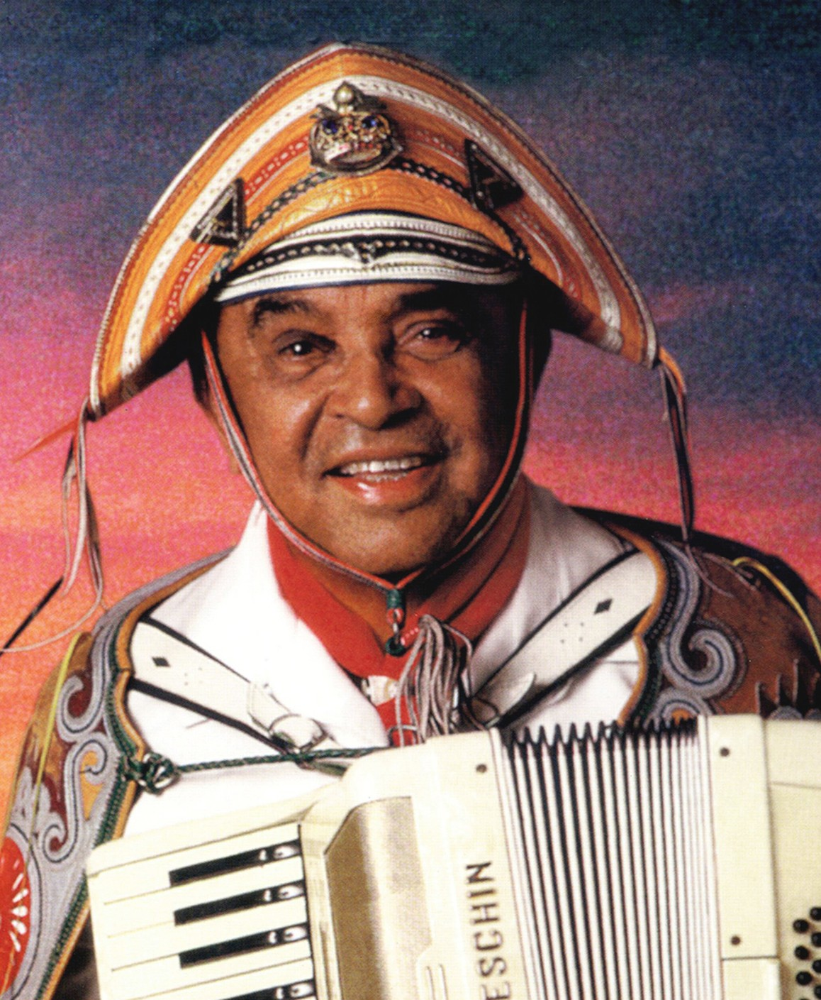
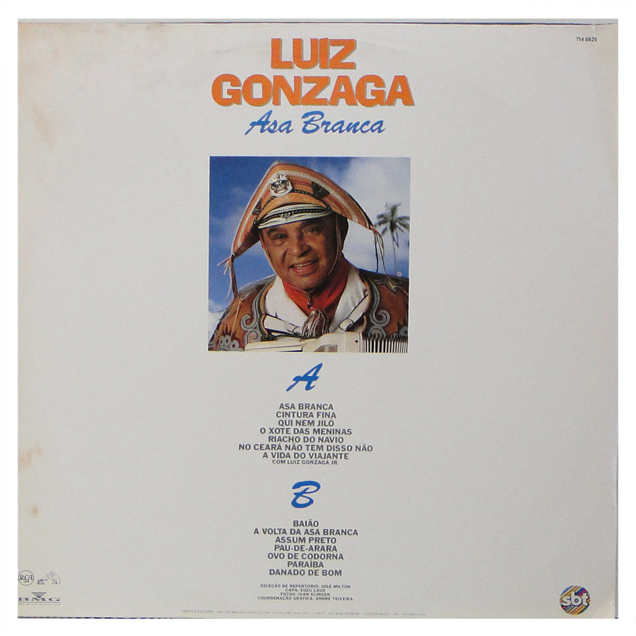

História
Luiz Gonzaga do Nascimento nasceu em 13 de dezembro de 1912, na cidade de Exu, Pernambuco. Desde cedo se interessou pela música, aprendendo a tocar sanfona ainda criança. Sua infância foi marcada pela vida no sertão nordestino, o que influenciou fortemente sua obra musical.
Na década de 1940, mudou-se para São Paulo e iniciou sua carreira profissional, levando os ritmos nordestinos para o rádio e para os palcos do Sudeste. Foi parceiro de Humberto Teixeira e juntos compuseram clássicos como "Asa Branca", que se tornou um verdadeiro hino da cultura nordestina.
Conhecido como o "Rei do Baião", Luiz Gonzaga popularizou gêneros como baião, xote e forró em todo o Brasil, transformando a música do interior em referência nacional. Ao longo de sua carreira, gravou mais de 600 músicas e realizou inúmeras turnês, sempre mantendo forte ligação com suas raízes.
Faleceu em 2 de agosto de 1989, em Recife, Pernambuco, deixando um legado musical que influenciou gerações de artistas e mantém viva a cultura nordestina até hoje.
Músicas
Curiosidades
Seu instrumento principal era a sanfona, que começou a tocar ainda criança.
Recebeu o título de "Patrimônio Vivo da Música Brasileira" pelo Instituto do Patrimônio Histórico e Artístico Nacional (IPHAN).
Foi conhecido como o "Rei do Baião", popularizando ritmos nordestinos como baião, xote e forró pelo Brasil inteiro.
Seu primeiro álbum, lançado em 1941, ajudou a introduzir o baião na música popular brasileira.
A música "Asa Branca" é considerada um hino do Nordeste e retrata a seca e a migração nordestina.
Durante a Segunda Guerra Mundial, trabalhou no rádio, apresentando programas e levando o baião ao público urbano.
Ele tinha o hábito de tocar sanfona para seu rebanho de cabras quando jovem.
Gonzaga gravou mais de 600 músicas durante sua carreira.
Foi casado e teve filhos que também seguiram na música, mantendo viva a tradição da família Gonzaga.
Em 2012, o Brasil comemorou o centenário de seu nascimento com shows, exposições e documentários.
Linha do Tempo
1912 - Nasceu em Exu, Pernambuco.
1920 - Começou a tocar sanfona ainda criança, influenciado pelo pai e pela cultura nordestina.
1930 - Mudou-se para o Recife e começou a trabalhar como músico em festas e rádios locais.
1941 - Primeira gravação profissional em São Paulo, iniciando sua carreira nacional.
1945 - Conheceu Humberto Teixeira, com quem compôs "Asa Branca".
1947 - Lançamento de "Asa Branca", música que se tornaria um hino do Nordeste.
1950 - Popularização do baião em todo o Brasil, realizando shows em várias capitais.
1960 - Gravou grandes sucessos como "Baião" e "Xote das Meninas".
1970 - Recebeu reconhecimento internacional, influenciando músicos fora do Brasil.
1989 - Morte em Recife, Pernambuco, deixando um legado imenso na música brasileira.
Galeria


Documentário Luiz Gonzaga
Exu, Pernambuco:
Local de nascimento do Luiz Gonzaga